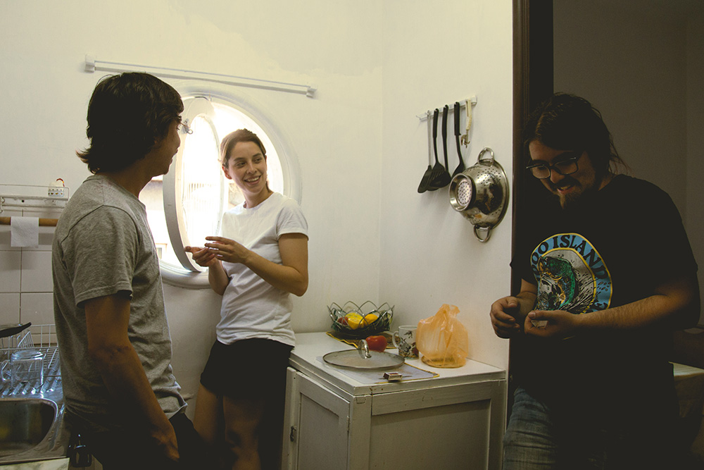

Este es "Señoras", el EP debut de Los Valentina
La banda, formada a principios de 2015, grabó las composiciones de Valentina Martínez bajo la producción de Leo Saavedra. "Señoras" puede descargarse desde la web de Piloto.
Foto por Hisashi Tanida
Ya se encuentra disponible para libre descarga "Señoras" el EP de Los Valentina, banda formada por Valentina Martínez, Juan Fernando Rubilar y Roberto Sanhueza. El conjunto Los Valentina es uno de los últimos en unirse al cartel de Piloto, quienes son los encargados de editar su primera placa.
"Señoras" es el resultado de las composiciones musicales de Valentina, quien en una fiesta conoce a Juan Fernando Rubilar y le muestra las maquetas de canciones como "Señora 1", grabadas desde un celular. Valentina se había presentado en algunas ocasiones en vivo sus canciones y creó diversos proyectos musicales, paralelo a sus estudios universitarios, que posteriormente abandonó. A Juan Fernando le pareció interesante el trabajo de Valentina y la invitó a grabar sus canciones, apoyando en baterías y sumando a Roberto Sanhueza en el bajo. Con la producción y guitarras de Leo Saavedra (ex Primavera de Praga), a principios de 2015 se graba "Señoras", bautizando a la banda con el nombre de su principal compositora, la cual define como "Los Valentina: artículo masculino para nombre femenino".
El EP habla sobre la vida cotidiana, la nostalgia hogareña, las dueñas de casa y las actividades que realizan, como quedarse en casa o hacer aseo. "Señoras" también recoge la estética propia de la música de radio, especialmente de aquellas emisoras que se caracterizan por un corte más tradicional de canciones. "Tuve una relación con la música desde pequeña en el colegio, como parte de la formación esencial, el folklor estuvo siempre en el oído", agrega Valentina, quien plasmó esta influencia en "Señoras" (Piloto, 2016).
El EP debut de Los Valentina se suma a los estrenos de Piloto que han marcado un hito dentro de la escena musical chilena con discos que fueron considerados como destacados del año 2015 en la prensa especializada: "Temporada" de Patio Solar, "Nonato Coo" de Niños del Cerro y "Papel" de Pujem. Además, es el segundo lanzamiento editado por Piloto este 2016, siguiéndole el paso al EP "Regalo" de MonoAzul (Proyecto paralelo del integrante de El Cómodo Silencio de los que Hablan Poco).
Puedes descargar “Señoras” (Piloto, 2016) en la pagina oficial del sello Piloto http://www.piloto.club/. Tambien desde este link (descarga directa) http://smarturl.it/senoras.
Sigue a Los Valentina en Facebook https://www.facebook.com/Los-Valentina-130413023956729 y a las redes de Piloto: Facebook https://www.facebook.com/piloto.club, y Twitter https://twitter.com/pilotoSCL.
ADJUNTOS:
FOTO 1 BANDA LOS VALENTINA
FOTO 2 BANDA LOS VALENTINA
FOTO 2 PORTADA EP SEÑORAS
REDES SOCIALES:
FACEBOOK LOS VALENTINA
FACEBOOK PILOTO
PILOTO: Sitio Web Facebook Twitter Instagram Soundcloud Youtube
✈ comunicaciones@piloto.club ✈ contacto@piloto.club ✈